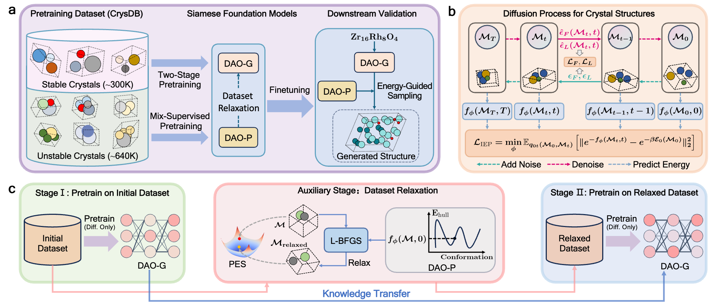
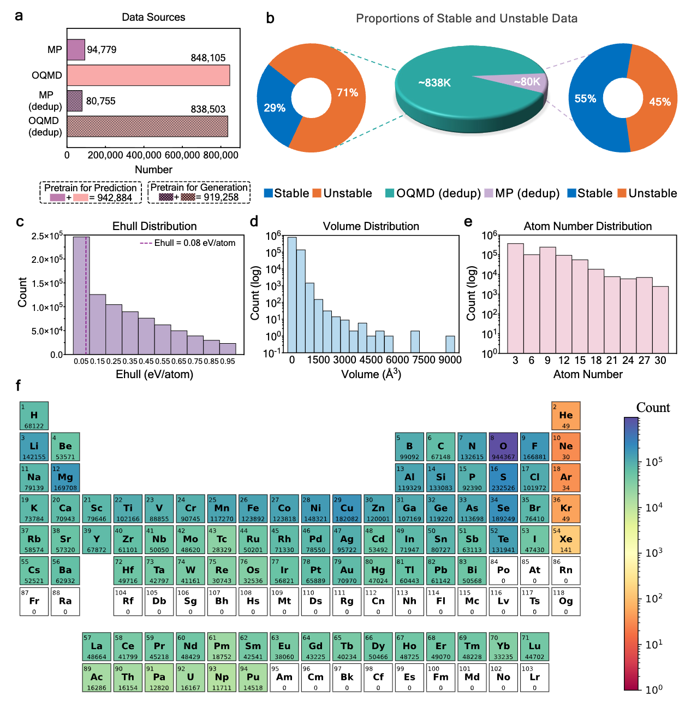
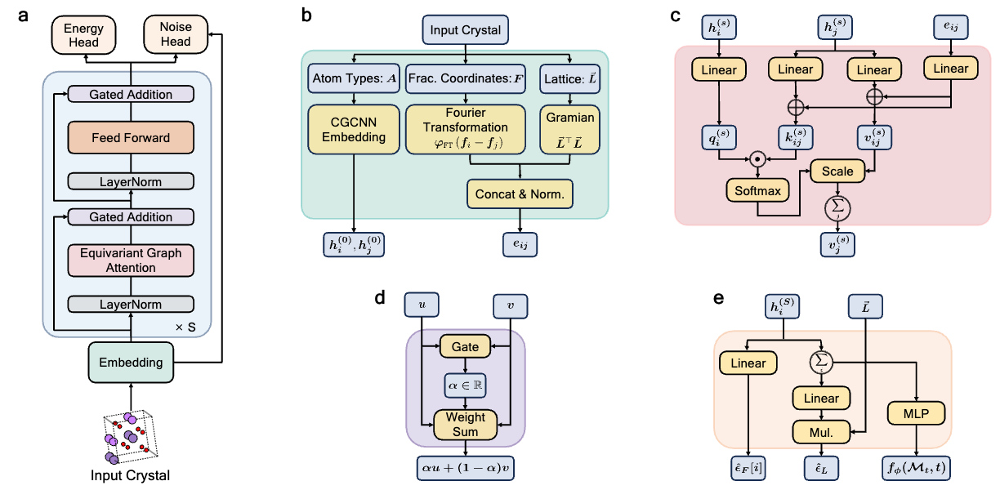
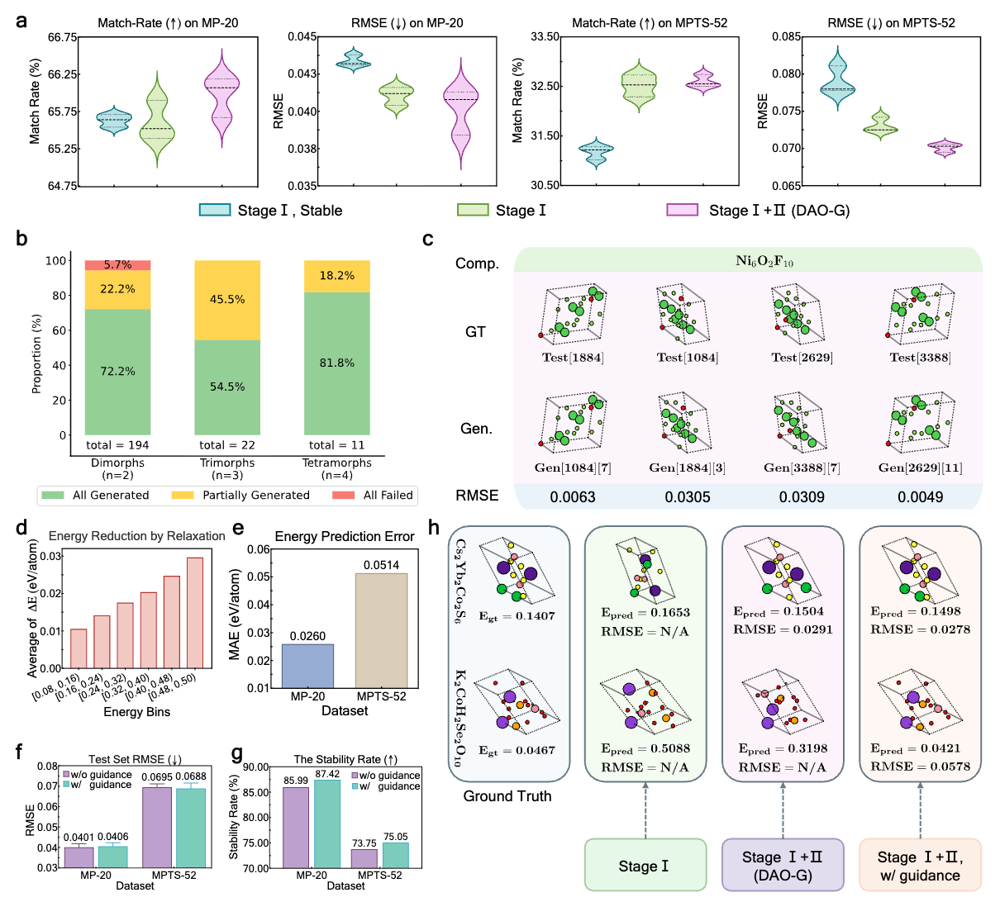
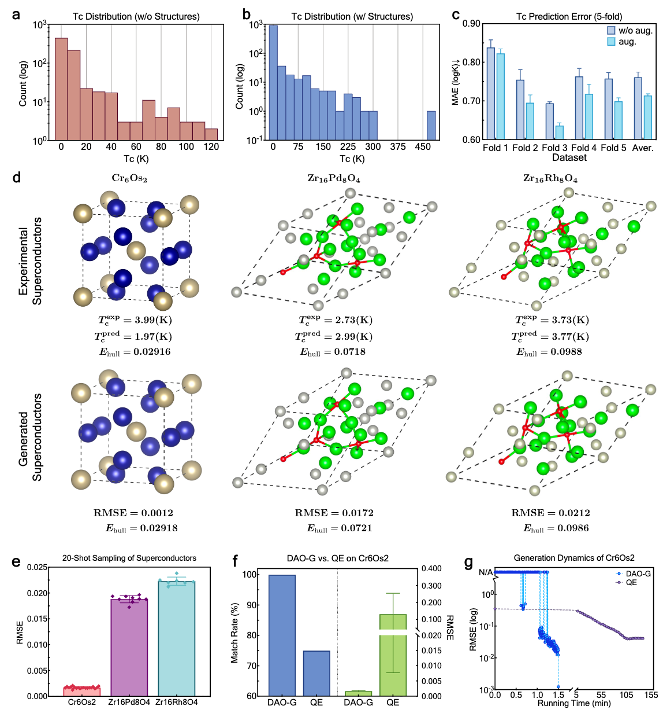

DAO unites a structure generator (DAO-G) and an energy predictor (DAO-P) in a pretrain–finetune framework, achieving state-of-the-art crystal structure prediction and over 2000× speedup versus DFT softwares on real-world superconductors.
1Gaoling School of Artificial Intelligence, Renmin University of China
2Beijing Key Laboratory of Research on Large Models and Intelligent Governance
3Engineering Research Center of Next-Generation Intelligent Search and Recommendation, MOE
4Department of Computer Science and Technology, Tsinghua University
5Institute for AI Industry Research, Tsinghua University
6Advanced Computing and Storage Lab, Huawei Technologies
7School of Intelligence Science and Technology, Nanjing University
Predicting crystal structures from chemical compositions is a fundamental challenge in materials discovery — analogous to protein folding but with far more complex 3D geometries.
Traditional CSP methods — first-principles calculations, stochastic sampling, and evolutionary optimization — are inherently limited by high computational costs and poor scalability with system complexity.
Existing deep generative models rely on domain-specific small datasets for training, leading to limited generalizability to unseen structures and unsatisfactory performance on widely recognized CSP benchmarks like MPTS-52.
Prior crystal foundation models either target force-field prediction (GNoME, MACE-MP-0) or general-purpose generation (MatterGen) — none specifically targets CSP with thorough investigation.
We propose Diffusion-based Crystal Omni (DAO), a pretrain–finetune framework comprising two complementary foundation models: DAO-G for generating stable crystal structures and DAO-P for predicting energy and assisting DAO-G. Both are built upon Crysformer, a geometric graph Transformer ensuring O(3) and periodic invariance for crystal structures.

The DAO framework: pretraining pipeline and downstream validation of DAO-G and DAO-P.
Six principal advances that collectively push CSP forward.
First foundation model framework specifically designed for CSP, comprising DAO-G (generator) and DAO-P (predictor) that synergistically cooperate: DAO-P relaxes data and guides generation for DAO-G, while DAO-G augments structural data for DAO-P.
Curated from Materials Project and OQMD, comprising ~940K entries of stable and unstable crystals with energy annotations, enabling large-scale pretraining with rigorous deduplication to prevent data leakage.
Stage I pretrains DAO-G on all crystals; Stage II refines on a dataset where unstable structures are relaxed by DAO-P using L-BFGS, mitigating bias toward unstable energy landscapes.
DAO-P provides energy-based guidance during DAO-G's sampling, steering generated structures toward lower-energy, more thermodynamically stable configurations using a principled exponential energy loss.
Pretraining consistently improves performance across multiple backbone architectures. DAO-G (Crysformer + FlowMM) achieves the best Match Rates of 74.17% on MP-20 and 42.01% on MPTS-52.
On Cr6Os2, DAO achieves 100% match rate with RMSE 0.0012 and over 2000× speedup per iteration vs. DFT. DAO-P predicts critical temperatures with errors as low as 0.04 K.

Statistics of CrysDB: source distribution, stable/unstable proportions, and feature distributions.
DAO's pretrain–finetune pipeline with two Siamese foundation models and a two-stage pretraining strategy.
Compile ~940K crystal entries from Materials Project (94,779 entries) and OQMD (848,105 entries), containing 3–30 atoms with Ehull < 1.0 eV/atom. After deduplication against downstream benchmarks, the final CrysDB contains 919,258 entries — 29% stable, 71% unstable from OQMD; 55% stable, 45% unstable from MP.
DAO-G is pretrained via a diffusion process (DiffCSP) to predict lattice noise εL and fractional coordinates score εF. Training on both stable and unstable crystals enables learning from a broader distribution. Simultaneously, DAO-P is pretrained with a mix-supervised loss: the diffusion CSP loss (self-supervised) plus an exponential energy loss (supervised) that provably converges to ground-truth intermediate energies under Boltzmann-constrained modeling.
DAO-P predicts energy gradients (force fields) for unstable structures (0.08 < Ehull ≤ 0.5 eV/atom) and relaxes them toward more stable configurations using the L-BFGS optimizer — replacing expensive DFT calculations with a fast ML-based alternative.
Continue pretraining DAO-G on the relaxed dataset with a reduced learning rate, refining the denoising process based on improved data quality and mitigating bias toward unstable regions.
During generation, DAO-P steers the sampling of DAO-G via energy guidance: ∇Mt log pt(Mt) = ∇Mt log qt(Mt) − β∇MtEt(Mt, t). The Boltzmann-weighted distribution promotes thermodynamically stable structures.
DAO-G is directly finetuned for CSP without architecture modification. DAO-P is finetuned for energy/property prediction with specialized heads across eight distinct datasets.
Both DAO-G and DAO-P are built on Crysformer, a geometric graph Transformer with four modules: (1) an embedding module with CGCNN embeddings and Fourier-Transform-based invariant edge features; (2) an invariant graph attention module with separate parametric networks for keys, values, and edge features; (3) a gated addition module for flexible residual connections; (4) noise and energy prediction heads. Crysformer ensures O(3) equivariance for noise output and O(3) invariance for energy output, along with periodic translation invariance — critical symmetries for crystal structures.

Crysformer: embedding, invariant graph attention, gated addition, and prediction heads.
Evaluation on two well-recognized CSP benchmarks: MP-20 (≤20 atoms, 45,231 crystals) and MPTS-52 (≤52 atoms, 40,476 crystals).
| Category | Model | Size | MP-20 MR (%) ↑ | MP-20 RMSE ↓ | MPTS-52 MR (%) ↑ | MPTS-52 RMSE ↓ |
|---|---|---|---|---|---|---|
| Non-Pretrained | CDVAE | – | 33.90 | 0.1045 | 5.34 | 0.2106 |
| DiffCSP | – | 51.49 | 0.0631 | 12.19 | 0.1786 | |
| EquiCSP | – | 57.39 | 0.0510 | 14.85 | 0.1169 | |
| FlowMM | – | 61.39 | 0.0560 | 17.54 | 0.1726 | |
| Crysformer + DiffCSP | – | 51.55 | 0.0915 | 17.65 | 0.1428 | |
| Pretrained | DiffCSP | 12.3M | 51.23 | 0.0552 | 18.50 | 0.0825 |
| DiffCSP-large | 26.2M | 64.04 | 0.0433 | 30.77 | 0.0640 | |
| MatterGen | 25.3M | 67.40 | 0.0332 | 30.28 | 0.0703 | |
| FlowMM-large | 25.7M | 69.95 | 0.0378 | 33.78 | 0.0951 | |
| Crysformer + DiffCSP (DAO-G Stage I) | 25.2M | 65.60 | 0.0411 | 32.52 | 0.0731 | |
| Crysformer + FlowMM | 25.2M | 74.17 | 0.0400 | 42.01 | 0.1083 |
Bold green = best, underlined purple = second-best. All pretrained models trained on CrysDB. Results averaged over three runs.

Ablation studies: two-stage pretraining, polymorph generation, energy guidance, and stability rates.
Including unstable data in pretraining (Stage I) outperforms stable-only pretraining. Adding Stage II (data relaxation) further improves MR and reduces RMSE on MP-20, and significantly reduces RMSE variance on MPTS-52.
Energy-guided sampling increases stability rate from 85.99% → 87.42% on MP-20 and 73.75% → 75.05% on MPTS-52. It reduces RMSE on MPTS-52 (0.0695 → 0.0688) and enables an 86.8% energy reduction on K2Co2H4Se2O10.
DAO-G successfully generates all polymorphs in 72.2%, 54.5%, and 81.8% of 2-, 3-, and 4-polymorph cases. For Ni6O2F10 (4 conformations), all are hit with RMSEs of 0.0063, 0.0305, 0.0309, 0.0049.
Without finetuning on MP-20 or MPTS-52, DAO-P achieves MAEs of 0.0260 eV/atom on MP-20 and 0.0514 eV/atom on MPTS-52 test sets — accuracy considered acceptable for materials science. DAO-P also achieves SOTA results on four out of eight crystal property prediction datasets.
Validating DAO on three real-world superconductors unseen during pretraining and finetuning: Cr6Os2, Zr16Rh8O4, and Zr16Pd8O4.

Superconductor experiments: structure prediction, Tc estimation, and speed comparison with DFT.
DAO-G achieves 100% Match Rate and RMSE = 0.0012 over 20 runs. DFT Ehull of generated structure: 0.02918 vs. experimental 0.02916 — a difference of only 0.00002 eV/atom.
Although unstable Cr6Os2 structures existed in pretraining data, DAO-G generates the stable superconducting structure — not merely memorizing training examples.
vs. QE optimizer: 75% MR, avg. RMSE 0.1310, and >2000× slower per iteration.
Features rigid Wyckoff site occupancy and geometrically frustrated stella quadrangula lattices. DAO-G generates the structure with RMSE = 0.0172. Ehull difference: 0.0003 eV/atom.
A minor lattice change (~0.5%) substituting Rh for Pd significantly affects superconducting properties (Tc: 2.73 K → 3.73 K). DAO-G resolves this with RMSE = 0.0212.
DAO-P Tc errors: 2.02 K (Cr6Os2), 0.26 K (Zr16Rh8O4), 0.04 K (Zr16Pd8O4).
Using DAO-G to generate structures for 748 superconductors without structural data consistently improves DAO-P's Tc prediction across all 5 cross-validation folds, reducing average MAE (logK) from 0.761 → 0.714.
QE optimizer: ~138 minutes over 38 iterations. DAO-G: 1000 sampling iterations in 1.5 minutes — over 2000× faster per iteration.
DAO demonstrates the significant potential of Siamese foundation models for advancing materials science research and development.
DAO-G achieves state-of-the-art results on both MP-20 and MPTS-52 benchmarks, with 74.17% and 42.01% Match Rates. Pretraining consistently benefits multiple backbone architectures.
DAO-P enhances DAO-G via dataset relaxation and energy-guided sampling; DAO-G augments structural data for DAO-P when structural information is unavailable.
DAO accurately predicts structures and critical temperatures for real-world superconductors, outperforming DFT in both efficiency and accuracy — a promising step toward designing novel high-temperature superconductors.
If you find our work useful, please consider citing:
@article{wu2025siamese,
title={Siamese foundation models for crystal structure prediction},
author={Wu, Liming and Huang, Wenbing and Jiao, Rui and Huang, Jianxing and Liu, Liwei and Zhou, Yipeng and Sun, Hao and Liu, Yang and Sun, Fuchun and Ren, Yuxiang and others},
journal={arXiv preprint arXiv:2503.10471},
year={2025}
}